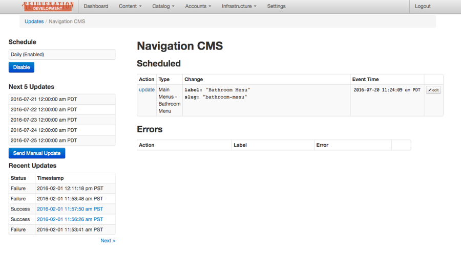
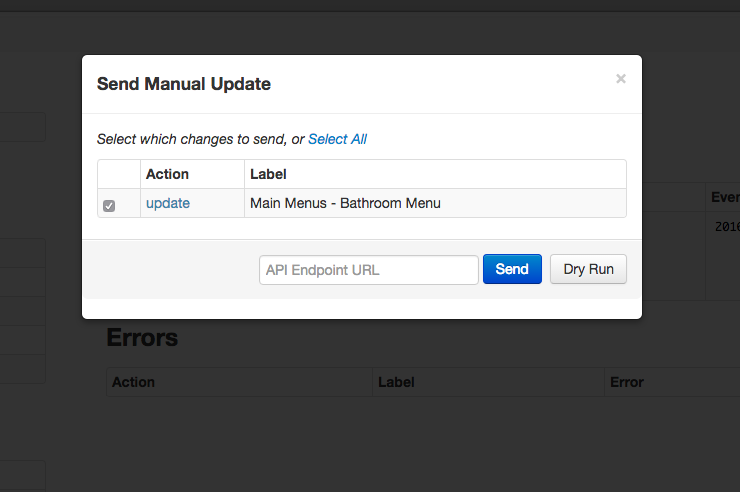
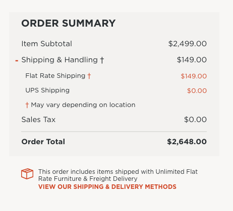
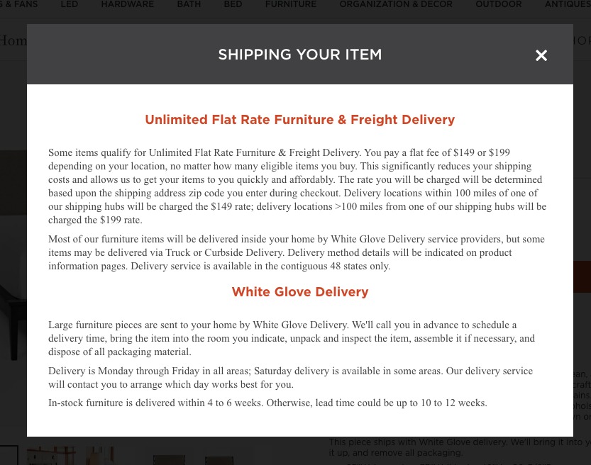
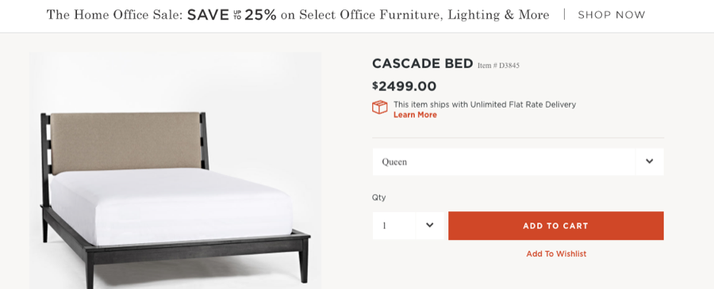

Nº 23 · Habitat III — The early internet & client work
Rejuvenation
Staging-to-production sync for a large Rails/Mongo commerce stack — preview changes on production-like data before shipping.
- First observed
- 2016
- Diet
- Sidekiq jobs & REST
Keeping staging and production data in sync - at Rejuvenation with Copious.
Rejuvenation was looking to create a separate staging and production environment for their large ruby on rails / mongo db e-commerce site. As a contractor at Copious, I implement a solution which would synchronize records from the staging server to production - via a Sidekiq job and a REST endpoint I designed. This would allow Rejuvenation to preview their content and product updates on production-like environment before publishing to their high-traffic store.
I also assisted in adding flat rate shipping messaging and calculations to select products.
Plates · from the field




